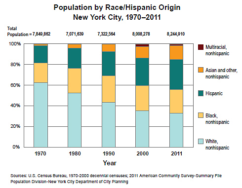
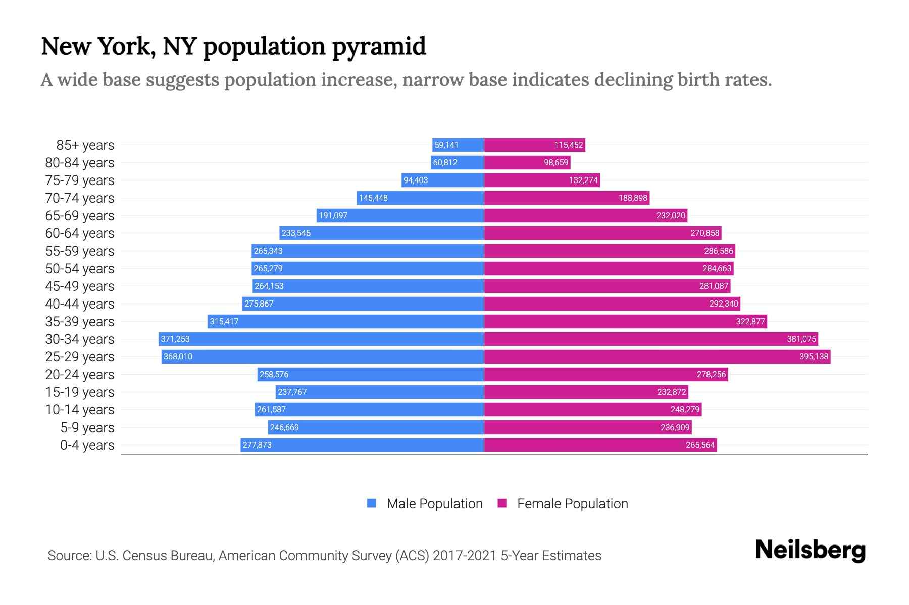

New York
Description
New York City is the largest city of the United States. It is known for its futuristic outlook, lots of diverse landmarks, top-quality products and services, and a huge network of highways, railroads, and subways.
Population

New York City has about 8 million residents, making it the most populated city in the United States. According to the bar for the 2011 year in the graph below, about 30% of them are white, 20% - black, 25% - hispanic, 10% - asians, and 5% - multiracial.

Next, the age and gender population. For the first time, this population pyramid may seem symmetrical and have an arrow-like shape, which means that this city keeps growing and has almost the same amount of male and female residents of all ages.
To some extent, that's true. But if you look at this graph deeper, you can see the paranormal spike in the ages from 25 to 34 years, and then a sudden decrease across the younger people. You may also notice that there are much more females than males in the top rows with ages 75 years and older, but this feature is pretty common across many of the other cities worldwide.